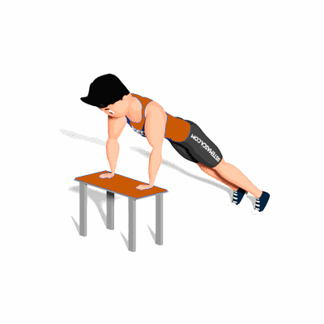

Flexão Inclinada

Esse exercício da ênfase a região do peitoral e é indicado do iniciante ao avançado.
Ficha Técnica
Tipo: Musculação
Grupo Muscular: Peito
Aparelho: Nenhum
Músculos: Nenhum
Como realizar
- Fique na posição padrão de flexão com as mãos em uma superfície elevada e ligeiramente mais afastadas que a largura dos ombros;
- Seus cotovelos deverão estar completamente encaixados;
- Com o corpo estendido, desça o tórax até a superfície elevada;
- Faça uma pausa e retorne à posição inicial, mantendo o tronco firme.
 RC STORE
RC STORE